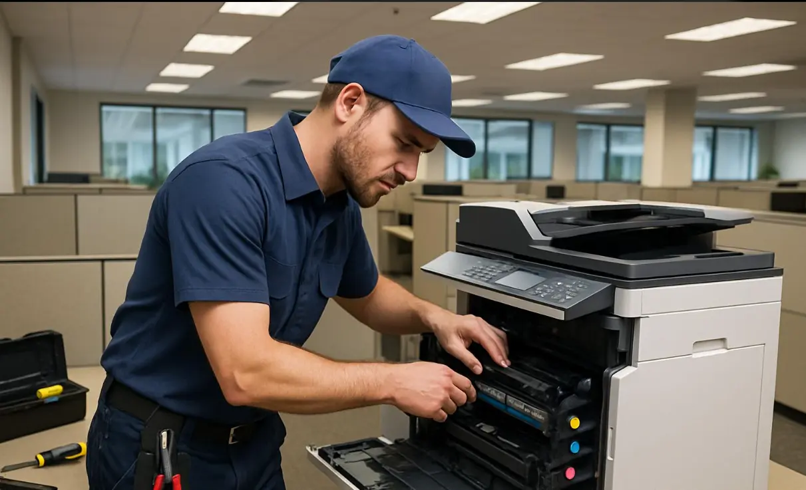

Since 2001, our KPHB service centre has repaired printers and refilled cartridges for homes and offices across Hyderabad — laser, inkjet and plotters, diagnosed at the counter or at your door.
One call, one visit, and your printer is back on the desk — tested, cleaned and printing.
Step 01
Enquire
Call or WhatsApp +91 94409 44388 and tell us what the printer is doing — or not doing.
Step 02
Share the details
Brand, model and the error on screen. That is enough for a first diagnosis and repair options.
Step 03
Diagnosis & repair
At our KPHB centre, or on-site at your home or office. Door pickup and delivery across Hyderabad.
Step 04
Test & handover
Every repair ends with a print test in front of you before handover. No test, no handover.